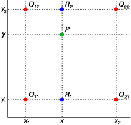

实验二：向量化计算
1 实验简介
NumPy 是 Python 中科学计算的基础包。它是一个 Python 库，提供多维数组对象，各种派生对象（如掩码数组和矩阵），以及用于数组快速操作的各种 API，有包括数学、逻辑、形状操作、排序、选择、输入输出、离散傅立叶变换、基本线性代数，基本统计运算和随机模拟等等。
Numpy 代码一般采用向量化（矢量化）描述，这使得代码中没有任何显式的循环，索引等，这样的代码有以下好处：
- 向量化代码更简洁，更易于阅读
- 更少的代码行通常意味着更少的错误
- 代码更接近于标准的数学符号
另外，向量化的代码能够规避掉 Python 中缓慢的迭代循环，被底层的实现更好的调度，如接入 BLAS 矩阵运算库，从而实现更高的性能。
双线性插值是计算机视觉图像处理中的常用算法，它在计算机图形学中也可以用于材质贴图的重采样。
本次实验我们将借助 NumPy 实现一个支持批量处理的向量化的双线性插值，来让大家熟悉 NumPy 的向量化编程模式。
2 实验环境
- 任何含有 Python3 和 NumPy 的环境
3 实验基础知识介绍
3.1 NumPy API
由于课上已经介绍过这部分内容，因此我们在实验手册中略去。具体可以参考 NumPy 的文档。
3.2 双线性插值算法
双线性插值的算法其实非常简单，概括来说就是先在 \(x\) 轴上进行一次插值，再在 \(y\) 轴上进行一次插值。

以在灰度图上进行插值为例，我们已知外围的四个点 \((14, 20), (15, 20), (14, 21), (15, 21)\) 灰度值分别为 91, 210, 162 和 95，然后希望通过插值得到 \((14.5, 20.2)\) 处的灰度值。
接下来我们先在 \(x\) 方向上通过线性插值计算出 \((14.5, 20), (14.5, 21)\) 两个点的灰度值 150.5, 128.5，然后再使用这两个值在 \(y\) 方向上再次进行线性插值，得到 \((14.5, 20.2)\) 坐标处的灰度值 146.1。
注意这里是一个单通道的例子，对于实际的情况，我们往往有很多个通道，如彩色图片拥有 RGB 三个通道，一些图片可能还有 \(\alpha\) 透明度通道，或是深度通道。对于多通道的情况，我们需要对每个通道进行分别插值。
3.2.1 形式化定义
形式化定义摘自维基百科
假如我们想得到未知函数 \(f\) 在点 \({\displaystyle P=\left(x,y\right)}\) 的值，假设我们已知函数 \(f\) 在 \({\displaystyle Q_{11}=\left(x_{1},y_{1}\right)}\), \({\displaystyle Q_{12}=\left(x_{1},y_{2}\right)}\), \({\displaystyle Q_{21}=\left(x_{2},y_{1}\right)}\) 及 \({Q_{22}=\left(x_{2},y_{2}\right)}\) 四个点的值。

首先在 \(x\) 方向进行线性插值，得到 $$ {\displaystyle {\begin{aligned}f(x,y_{1})&\approx {\frac {x_{2}-x}{x_{2}-x_{1}}}f(Q_{11})+{\frac {x-x_{1}}{x_{2}-x_{1}}}f(Q_{21}),\\ f(x,y_{2})&\approx {\frac {x_{2}-x}{x_{2}-x_{1}}}f(Q_{12})+{\frac {x-x_{1}}{x_{2}-x_{1}}}f(Q_{22}).\end{aligned}}} $$ 然后在 \(y\) 方向进行线性插值，得到 $$ {\displaystyle {\begin{aligned}f(x,y)&\approx &&{\frac {y_{2}-y}{y_{2}-y_{1}}}f(x,y_{1})+{\frac {y-y_{1}}{y_{2}-y_{1}}}f(x,y_{2})\\ &=&&{\frac {y_{2}-y}{y_{2}-y_{1}}}\left({\frac {x_{2}-x}{x_{2}-x_{1}}}f(Q_{11})+{\frac {x-x_{1}}{x_{2}-x_{1}}}f(Q_{21})\right)\\ &&&+{\frac {y-y_{1}}{y_{2}-y_{1}}}\left({\frac {x_{2}-x}{x_{2}-x_{1}}}f(Q_{12})+{\frac {x-x_{1}}{x_{2}-x_{1}}}f(Q_{22})\right)\\ &=&&{\frac {1}{(x_{2}-x_{1})(y_{2}-y_{1})}}{\big (}f(Q_{11})(x_{2}-x)(y_{2}-y)+f(Q_{21})(x-x_{1})(y_{2}-y)\\ &&&+f(Q_{12})(x_{2}-x)(y-y_{1})+f(Q_{22})(x-x_{1})(y-y_{1}){\big )}\\ &=&&{\frac {1}{(x_{2}-x_{1})(y_{2}-y_{1})}}{\begin{bmatrix}x_{2}-x&x-x_{1}\end{bmatrix}}{\begin{bmatrix}f(Q_{11})&f(Q_{12})\\ f(Q_{21})&f(Q_{22})\end{bmatrix}}{\begin{bmatrix}y_{2}-y\\ y-y_{1}\end{bmatrix}}.\end{aligned}}} $$ 注意此处如果先在 \(y\) 方向插值、再在 \(x\) 方向插值，其结果与按照上述顺序双线性插值的结果是一样的。
3.3 NHWC 数据格式
真实情况下我们处理的数据都是以 batch 为单位的，按批进行处理的。以双线性插值为例，我们往往会一次性送入 \(N\) 张大小为 \(H \times W\) 的图片，每个像素上有 \(C\) 个通道，然后一次性返回这 \(N\) 张图片处理好的结果。此时我们一次性传入的数据，就是直接按顺序堆叠在一起的 NHWC 格式的数组，它将 batch 作为了第一个维度，而后三个维度分别是单张图片的高度、宽度、通道数。你可以将这一数据格式理解为 c 语言中的高维数组 image[N][H][W][C]，而因为 c 的数组和 NumPy 的 ndarray 一样都是在内存里连续排放的，所以对于 image[x1][x2][x3][x4]，其实就是 image[x1 * H * W * C + x2 * W * C + x3 * C + x4] 处的内存。
另一个常见的数据格式是 NCHW，也就是单张图片内通道在前，不过这里我们没有选用。
数据格式更多是对数据的存放顺序进行约定，你可以通过 np.transpose 将不同维度进行调换。
4 实验步骤
4.1 接口定义
其含义是，对于 batch 内的每一张 \(H1\times W1\) 的图 a'，b' 中给出了新的 \(H2\times W2\) 的图中每个像素所想要采样的 a' 图中对应点的坐标，并将采样结果返回。
为了简化任务，我们假定传入的采样点不会出现在 \((H1 - 1, W1 - 1)\)，即图像的右下角。
4.2 基准代码
下面给出直接使用 for 循环迭代计算的双线性插值版本：
4.3 完成向量化实现
在我们给出的代码的 bilinear_interp/vectorized.py 中，完成 bilinear_interp_vectorized 函数。
4.4 检测实现正确与加速效果
运行 main.py，查看输出，一切顺利将看到以下结果：
Generating Data...
Executing Baseline Implementation...
Finished in 139.50709176063538s
Executing Vectorized Implementation...
Finished in 4.717759132385254s
[PASSED] Results are identical.
Speed Up 29.570626190511327x
否则将会触发异常：
Traceback (most recent call last):
File "Introduction-Labs-2021/lab2_vectors/main.py", line 28, in <module>
raise Exception('Results are different!')
Exception: Results are different!
其中，耗时与加速比与你的实现和设备有关（主要是实现）。请在报告中将你的运行结果贴出。
5 实验初始代码
详见 starter_code
6 实验任务与要求
- 完成双线性插值的向量化版本
- 测试向量化实现的正确性和加速比
- 提交以下内容：
- 代码
- 简单实验报告，包含
- 思路
- 正确性与加速比
参考资料
- 关于双线性插值：https://en.wikipedia.org/wiki/Bilinear_interpolation
- NumPy 文档：https://numpy.org/doc/stable/
- 一篇不错的入门教程：https://medium.com/better-programming/numpy-illustrated-the-visual-guide-to-numpy-3b1d4976de1d
- 一篇稍微硬核一点的教程：https://www.labri.fr/perso/nrougier/from-python-to-numpy/
- 更多练习：https://github.com/rougier/numpy-100